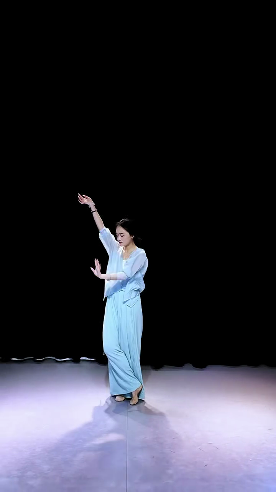

古典 / 国风 → 清雅国风主题
清别欢
古典舞 · 圆月意境 · 5句 · 20.7s
74
身姿舒展，韵味在了
节奏与气息在线；重心与手臂延伸是打磨点。
老师点评
你的舞感很自然，尤其气息的收放有了古典韵味。旋身时重心再压住一点，手臂的延伸线条会更漂亮，我们一起把质感磨出来。
旋身前先沉住重心：想象头顶一根线上提、主力腿踩实，再转。
大二位摊手：从腋窝向指尖送远，手腕放松走弧线（配合"云手"要领）。
收势定格给足1.3秒，气息沉下来，别急着散。
八拍卡 · 跟练




起 0.0–4.83s
举一望一转踢
动作举臂·望月 → 转身踢腿
脚下左脚支撑，右脚点地转体
意图静中起势，如月初升
怎么记 · 举—望—转踢
慢放 0.5×
▷ 正常速
探 4.83–9.66s
探一沉一开（胸腰）
动作探腿 → 下沉 → 大开胸腰 ★高潮
怎么记 · 探—沉—开
慢放 0.5×
▷ 正常速
故事卡
歌词全文
青莲与水多相见
山川也羡羡
莺啼燕语 浓情连
山川也羡羡
莺啼燕语 浓情连
意境解读
青莲喻纯洁深情，连山川都为之心动。整首以自然意象托情，含而不露——典型的中式情感美学。跳的是叙事，不是动作。
K-pop / 爆款 → 潮酷暗底主题
BABYMONSTER — CHOOM
K-POP · 女团挑战 · 4段 · 24s
82
卡点稳，气场出来了🔥
节奏点很准；手势幅度和落地干脆度再拉满。
老师点评
你的节奏抓得很准，Monster Claw 那下已经有内味了！手势幅度再打开、落地更干脆，气场直接拉满。
Claw 手势：手指张到最大再定住，别软，卡在重拍上。
落地干脆：膝盖缓冲后立刻锁住，别拖泥带水。
对镜练前奏那8拍，表情跟上动作，气场是练出来的。
八拍卡 · 跟练
Intro 0.0–6.0s
Monster Claw 起手
动作双手爪形上提，重拍定住甩头
脚下开步与肩同宽，压重心
怎么记 · 爪—提—甩
慢放 0.5×
▷ 正常速
Verse 6.0–12.0s
扭胯律动 + 点手
动作胯部左右律动，手指跟拍点
怎么记 · 扭—点—收
慢放 0.5×
▷ 正常速
故事卡
舞曲气质
CHOOM 讲的是"野性又高级"的怪兽美学——不是可爱，是掌控全场的气场。每个 claw 手势都在说"看我"。跳它，就是把自信穿在身上。